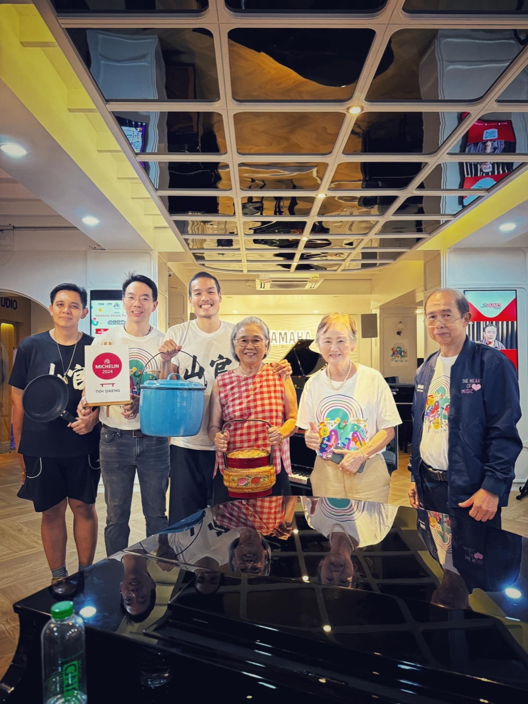

2024 · role · event
Selling massaman roti at Yamaha Music Fair to fund school bathroom repairs

Original text in Thai
5452 บาท ผลประกอบการมัสมั่นโรตี 😇❤️
วานซืนไปแสดงความยินดีกับเสี่ยจอม ป๋ามะ ครบรอบ 20 ปี รร ดนตรียามาฮ่านครภูเก็ต จัดกิจกรรม #yamahamusicfair2024 เลยชวนทีมบ้านอาจ้อทั้งครูทั้งมะ ไปขายมัสมั่นไก่โรตีที่งาน รายได้ทั้งหมดสมทบทุนโรตารีเหมืองแร่ซ่อมแซมห้องน้ำ 12 ห้อง โรงเรียนบ้านฉลอง 😇✨
สรุปหาได้ช่วยครูกบปิ้งโรตี๊ม้าย งานนี้เชียร์ลูกค้าอย่างเดียวตั้งแต่ต้นจนจบงาน 3 ชม.ได้เงินค่าประตูห้องน้ำมา 2 บานถ้วน 😇❤️
ระหว่างที่กะลังขายมั่สมั่นนั้น ตลอด 3 ชม. ก้อซื้อของกินเพื่อนบ้านมาจนจุก 😅 ทั้งร้าน #heh ไก่พิริพิริ กับ ปลาหมึกคารามารี ร้าน #pizcolo พิซซ่า 1 ถาดฉ่ำๆ 🫠 ร้าน #teraboulanger ครัวซองเนยฝรั่งเศส ตั้งใจกินตัวเพลน สุดท้ายเต็มๆ กับช็อคโกแลต หร่อยจนรู้สึกผิด 😅 #หมูฉึกฉึก หมูข้าวเหนียวซิมเปิ้ลแต่หรอยจนหมดกุบ ปิดจบด้วย #torryicecream ไอติมรสใหม่ ช็อคโกแลตแท่งเคลือบช็อคโกแลตภูเก็ตอีกที 😅 ส่วน #goodcafe กินไม่รอดแอ่ 😣
ร่วมอนุโมทนากับลูกค้าทุกคนด้วยนะคับ ❤️
หวังว่ามัสมั่นไก่โรตี๊โต๊ะแดงบ้านอาจ้อ จะถูกปากถูกใจทุกคนนะ 🥰
#soundgallerygroup 🎼
#โรตารีเหมืองแร่ 🌊
#tohdaeng 🧧
#บ้านอาจ้อ ❤️